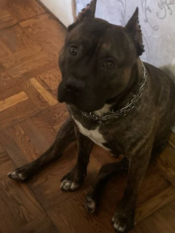

Головне
Пітбуль: Відданий захисник і вірний друг
Пітбуль - це порода собак, яка завжди викликає багато емоцій і обговорень. Відомі своєю силою, енергією та відданістю, вони залишають незабутнє враження на тих, хто з ними зустрічається.
Історія породи
Пітбулі походять з Британії, де їх використовували як робочих собак для погоничів худоби і боїв. Проте, з часом, ці собаки еволюціонували в якості домашніх улюбленців завдяки їх доброзичливості та терпимості до людей.
Зовнішній вигляд
Пітбуль має атлетичне тіло, що дозволяє йому бути активним та витривалим. Вони мають коротку шерсть, яка потребує мінімального догляду. Зазвичай пітбулі мають різноманітне забарвлення - від білого до чорного, з різними відтінками коричневого та сірого.
Характер
Ці собаки відомі своєю вірністю та відданістю своїм господарям. Вони чудово підходять для сімей з дітьми завдяки своєму м'якому характеру і великому терпінню. Проте, пітбулі потребують належної соціалізації, твердої руки і тренування з раннього віку, щоб уникнути можливих проблем з поведінкою.
Плюси і мінуси пітбуля
Плюси
- Вірність: Пітбулі дуже віддані своїм господарям і сім'ї.
- Енергія: Вони дуже активні і можуть стати чудовими партнерами для активного відпочинку.
- Розум: Пітбулі швидко навчаються і люблять виконувати нові команди
Мінуси:
- Потребують досвіду: Вони потребують власника, який розуміється на тренуванні собак
- Висока активність: Потребують багато фізичних вправ і розумової стимуляції.
- Соціалізація: Вимагають ранньої соціалізації для уникнення агресії.
Виховання пітбуля
Виховання пітбуля потребує належного підходу і певних методів, які забезпечать гармонійний розвиток і поведінку. Ось деякі з найефективніших методів виховання пітбулів:
1. Позитивне підкріплення
Цей метод полягає у нагородженні пітбуля за бажану поведінку. Ви можете використовувати ласощі, похвалу або ігри як винагороду. Це допомагає створити позитивну асоціацію між командою і бажаною дією.
2. Раннє соціалізування
3. Послідовність Важливо бути послідовним у тренуванні і дотримуватися одного підходу до виховання. Чіткі і зрозумілі команди, однаковий режим і правила допоможуть пітбулю зрозуміти, чого від нього очікують.
4. Встановлення лідерства
Пітбулі потребують сильного і впевненого лідера. Господар повинен бути впевненим у своїх діях і виявляти лідерські якості, щоб собака відчувала себе захищеною і розуміла свої межі.
5. Розумова стимуляція
Пітбулі потребують не лише фізичних навантажень, а й розумової стимуляції. Іграшки-головоломки, навчання нових команд і трюків допоможуть тримати їх мозок в тонусі і уникати нудьги.
6. Регулярні тренування
Щоденні тренування допоможуть підтримувати фізичну форму пітбуля і забезпечать їм необхідний вихід енергії. Прогулянки, біг, ігри на свіжому повітрі - все це важливо для їх здоров'я і благополуччя.
7. Використання професійних кінологів
Якщо у вас виникають труднощі з вихованням пітбуля, звернення до професійного кінолога може бути дуже корисним. Вони можуть допомогти вам розробити індивідуальний план тренування і надати цінні поради.
Використання цих методів допоможе вам виховати слухняного, доброзичливого і гармонійно розвиненого пітбуля. Якщо у тебе є додаткові питання або потребуєш більш детальної інформації, звертайся!